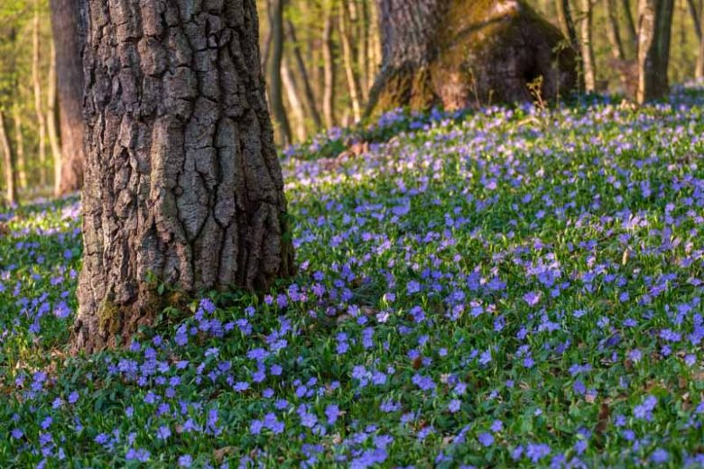

History of the Color Periwinkle
The Plant Itself
Periwinkle or vinca minor in Latin is a garden plant. Its landender blue shade and spiral petals make this flower stands out from the rest. As beautiful as they are, they are actually posionus when ingensted by humans and animals. Periwinkle is known as the "Death Flower" because they often grew in cemeteries.
The Color
The color of periwinkle represents calmness, winter, everlasting love, and serenity. It is often mixed up with lavender and different shades of blue.
Shades of Periwinkle and its Hexcode
| Shade | Hexcode | |||
|---|---|---|---|---|
| Periwinkle | Periwinkle Powder | True Periwinkle | Bright Periwinkle | Lilac Periwinkle |
| #CCCCFF | #C5CBE1 | #8E82FE | #7085FF | #8251ED |